Embodied AI & robot learning
Learning generalizable action policies for real and simulated robotic systems.
PhD candidate · Fudan University
I study how intelligent agents can understand, imagine, and act in the physical world.
01
I am a PhD candidate in Electronic Information at the School of Data Science, Fudan University, with an expected graduation date of June 2027. My research spans embodied AI, world modeling, robot learning, 3D vision, and autonomous-driving perception. I also have industry experience from internships at Huawei, NIO, and DeepRoute.ai.
02
Learning generalizable action policies for real and simulated robotic systems.
Modeling action-conditioned dynamics and improving vision-language-action policies through imagined interaction.
Unifying spatial understanding, reconstruction, and controllable scene generation.
Robust localization, mapping, and reconstruction.
03
* denotes equal contribution.
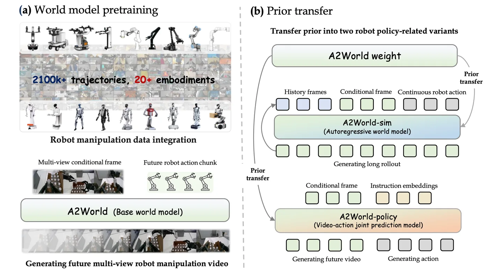
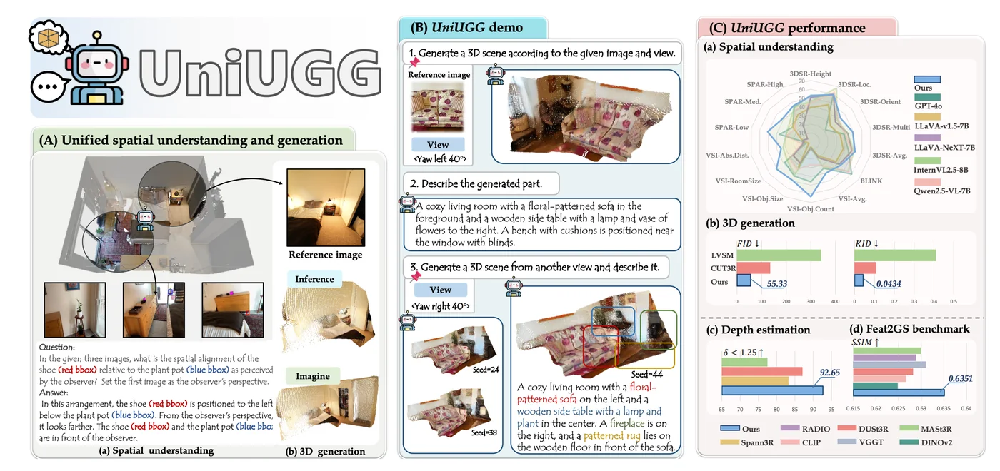
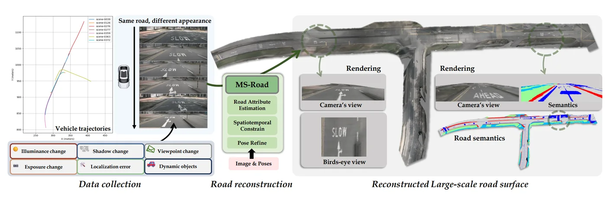
ACM International Conference on Multimedia (ACM MM), 2025 · First author
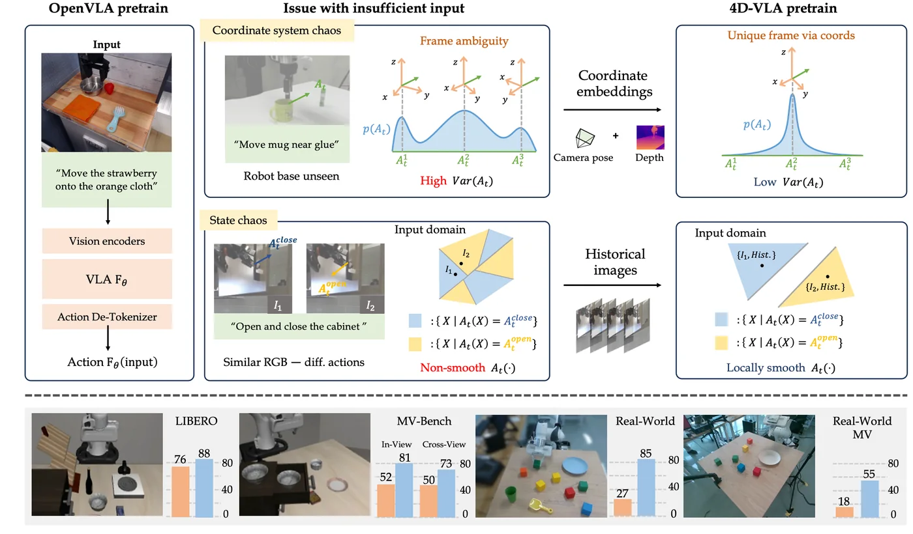
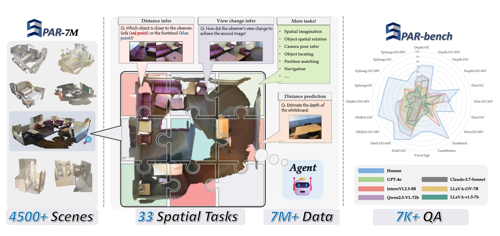
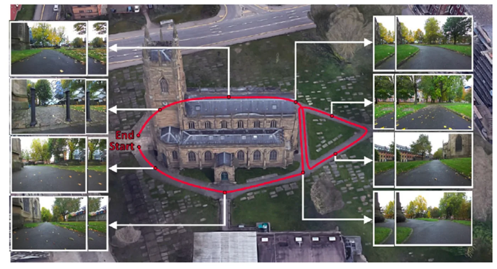
Advanced Robotics Research, 2025 · Co-first author
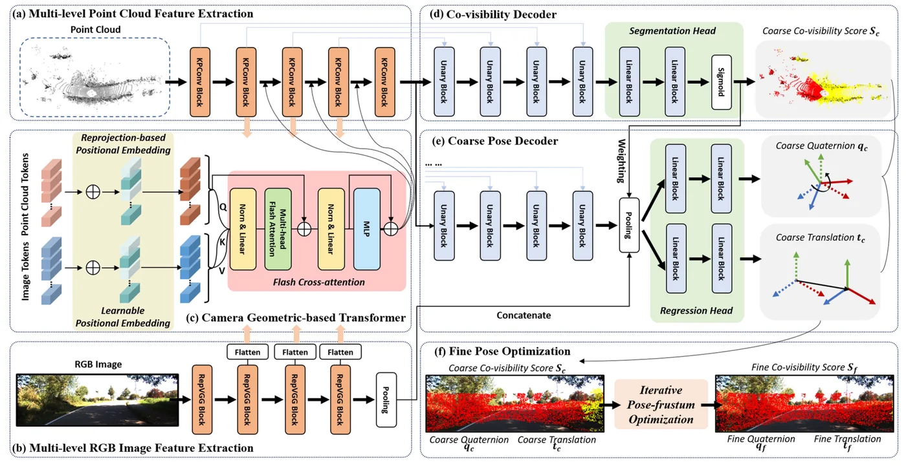
IEEE Robotics and Automation Letters (RA-L), 2024 · First author
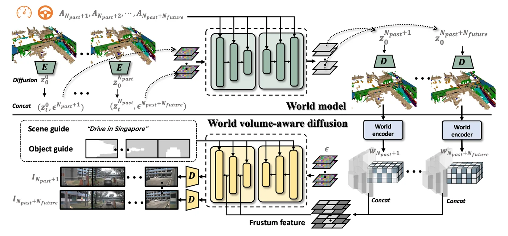
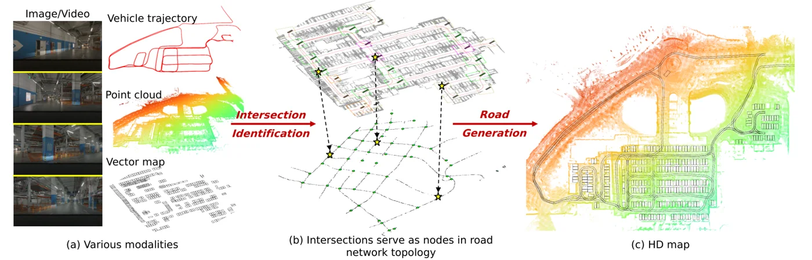
IEEE International Conference on Robotics and Automation (ICRA), 2024
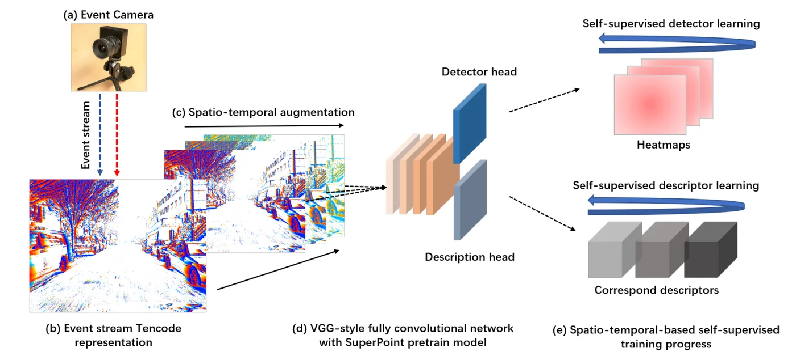
IEEE/CVF Winter Conference on Applications of Computer Vision (WACV), 2023 · First author
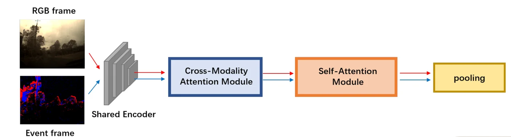
IEEE International Conference on Image Processing (ICIP), 2022 · First author
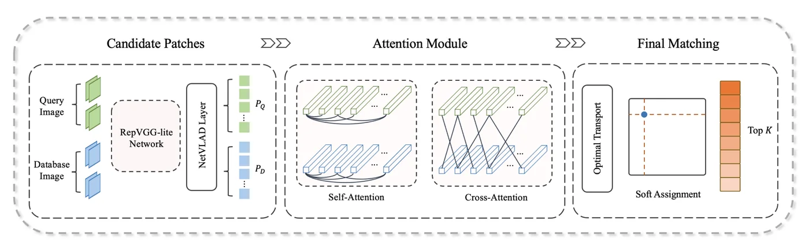
Chinese Conference on Computer Supported Cooperative Work and Social Computing (ChineseCSCW), 2022
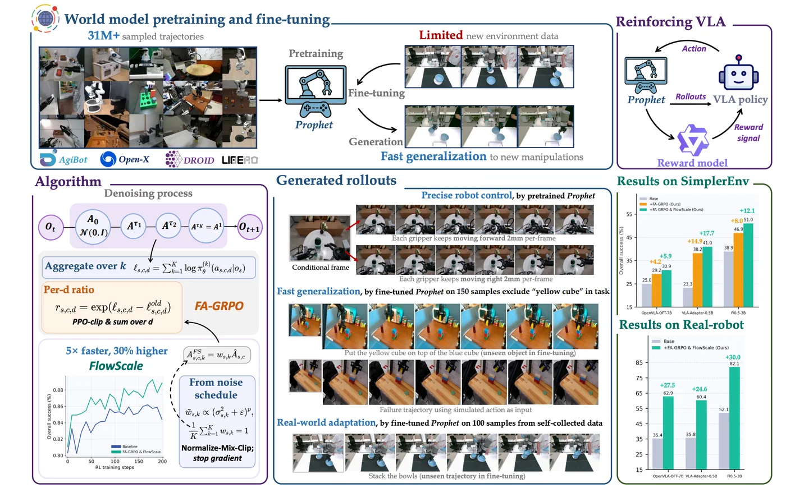
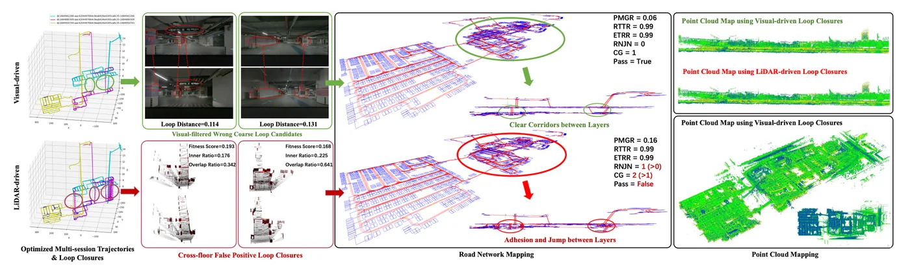
arXiv preprint · First author